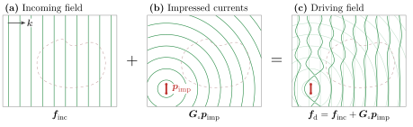
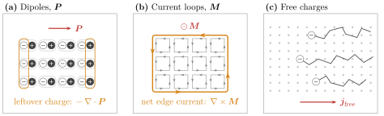
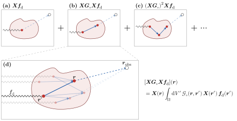

1 Maxwell's Equations
We start with the macroscopic formulation of Maxwell's equations in free space and in SI units:
\[\begin{aligned} \div{\vb*{d}} &= \rho_e \\ \div{\vb*{b}} &= \rho_m \\ \curl{\vb*{e}} &= -\ab(\red{\mu_\circ\vb*{j}_m} + \blue{\mu_{\circ}\pdv{\vb*{h}}{t}}) \\ \curl{\vb*{h}} &= \red{\vb*{j}_e} + \blue{\varepsilon_{\circ}\pdv{\vb*{e}}{t}} \end{aligned}\tag{1.1}\]
where we have introduced an artificial magnetic charge density $\rho_m$ and magnetic current density $\vb*{j}_m$ for symmetry (these quantities are believed to be zero in free space). We have also done something very particular (but deliberate): we have split the $\red{\text{material}}$ and $\blue{\text{vacuum}}$ response such that the vacuum response is the only field coupling. Every $\red{\text{current}}$, whether impressed by an external source or induced in a material has been taken into account inside the current densities $\red{\vb*{j}_e}$ and $\red{\vb*{j}_m}$. Note that the equations above are truly general (in so far as Maxwell's equations are a valid description of electromagnetism). We have not restricted ourselves to vacuum only response. Material scattering is encoded in the current densities. If this doesn't mean anything to you, don't worry, it just means we have not made any limiting assumptions writing Maxwell's equations in the form above.
One of the problems with Maxwell's equations written in this formulation is the lack of symmetry between the electric and magnetic quantities. One solution to this problem is to move to the Gaussian unit system which puts electric fields and magnetic fields on equal footing. As a strong believer in the SI system however, this is a hard sell for me. Instead, we can fake Gaussian units by scaling the magnetic equations by a factor of $Z_\circ = \sqrt{\mu_\circ / \varepsilon_\circ}$, the impedance of free space[1]. Doing so and using $\pdv{}{t} = -i\omega$ (i.e., moving to the frequency domain[2]), we can rewrite these equations in the following matrix form:
\[\begin{align*} \underbrace{\begin{bmatrix} ik_\circ^{-1} \vb*{j}_e\ab(\vb*{r}) \\ Z_\circ\varepsilon_\circ ik_\circ^{-1}\vb*{j}_m\ab(\vb*{r}) \end{bmatrix}}_{\vb*{p}\ab(r)} &= \underbrace{-Z_{\circ}^{-1}\begin{bmatrix} \bbone & -ik_\circ^{-1}\vb*{\nabla}\times \\ ik_\circ^{-1}\vb*{\nabla}\times & \bbone \end{bmatrix}}_{\bm{M}_{\circ}} \underbrace{\begin{bmatrix} \vb*{e}\ab(\vb*{r}) \\ Z_\circ\vb*{h}\ab(\vb*{r}) \end{bmatrix}}_{\vb*{f}\ab(r)}\tag{1.2} \end{align*}\]
Note that we have explicitly moved a factor of $k_\circ = 2\pi / \lambda$ (with $\lambda$ the wavelength in free space) in front of the curl operators [3] to make the differential operator spatially scale invariant (i.e., dimensionless). All the extra constants in eq. (1.2) are there to ensure that the entries of $\bm{M}_{\circ}$ are homogeneous, and have units of inverse impedance (i.e., Siemens in SI units). Keep in mind that, because we are working in the frequency domain, all the fields and sources pick up a dimension of time. A summary of the units of the various quantities appearing in these notes can be found in table 1.
Because $k_\circ^{-1}\bm{\nabla}\times$ is scale invariant, Gila works internally with wavelength-scaled coordinates $\vb*{\mathsf{s}} = \ab(\vb*{\mathsf{r}} - \vb*{\mathsf{r}}^\prime)/\lambda$. When we talk about a "cell of size $0.1\times 0.2\times 0.3$" we really mean cell of size $0.1\lambda \times 0.2\lambda \times 0.3\lambda$.
The matrix, $\bm{M}_{\circ}$, appearing in eq. (1.2) is known as the free-space Maxwell operator and is the central object of interest in electromagnetic scattering. It is with this object (more precisely, its inverse) that we will efficiently and accurately solve Maxwell's equations.
When we talk about "solving Maxwell's equations" we mean computing some output quantity given some input quantity. The output quantity is simple: it is the genuine electromagnetic field (either $\vb*{f}$ or the associated current density $\vb*{p}$, both describe the same physics). The input quantity is a bit more subtle.
1.1 Driving Fields
The "inputs" to an electromagnetic solver are the quantities that we control. The typical way of thinking about these "inputs" is one where we may have some incoming field (e.g., a laser, a plane wave, etc.) and some impressed currents (e.g., an antenna, a permanently polarized material etc.). Let $\vb*{f}_\text{inc}$ be these incoming fields and $\vb*{p}_{\text{imp}}$ be these impressed currents (see fig. 1.1 for a depiction of this partitioning). Then we define the driving field as $\vb*{f}_{\text{d}} = \vb*{f}_{\text{inc}} + \bm{M}^{-1}_{\circ}\vb*{p}_{\text{imp}}$ (note that we have not yet discussed the existence of the inverse of the vacuum Maxwell operator, but rest assured that this definition of $\vb*{f}_\text{d}$ is well-founded). Note that $\vb*{f}_{\text{inc}}$ must be "Maxwellian" fields, i.e., they are solutions to the free-space (source-free, divergence-free) Maxwell equations: $\bm{M}_{\circ}\vb*{f}_{\text{inc}} = \vb*{0}$. We call $\vb*{f}_{\text{d}}$ the driving field because it is the input to the system (it drives the system), reminding us of the inhomogeneous term in a differential equation.

Figure 1.1: The inputs to a solve. (a) An incoming field $\vb*{f}_\text{inc}$, here a plane wave with wavevector $\vb*{k}$, solves the source-free Maxwell equations, $\bm{M}_{\circ} \vb*{f}_\text{inc} = \vb*{0}$. (b) Impressed currents $\vb*{p}_\text{imp}$, here a small line source, radiate the field $\bm{G}_\circ\vb*{p}_\text{imp}$. (c) Their sum is the driving field, $\vb*{f}_\text{d}$ (solid) with the two fields it sums shown faintly underneath. The scatterer (dashed) is drawn for reference only: the driving field ignores its response.
1.2 Scatterers
Looking at eq. (1.2), nowhere do we find any mention of $\vb*{f}_{\text{d}}$. This is because Maxwell's equations, as written above, are self-consistent equations. They talk about the total fields and currents (i.e., the genuine fields and currents that "exist"[4] in nature), and do not care about how these fields and currents came to be. Denote these total fields and currents as $\vb*{f}_\text{t}$ and $\vb*{p}_\text{t}$, respectively, such that eq. (1.2) becomes $\vb*{p}_{\text{t}} = \bm{M}_{\circ}\vb*{f}_\text{t}$.
Because Maxwell's equations are linear, we can decompose the total fields into as many components as we want. Since we introduced the driving fields, it is natural to decompose the total fields into driving and some other quantity: $\vb*{f}_{\text{t}} = \vb*{f}_{\text{d}} + \vb*{f}_{\text{s}}$ (see fig. 1.2). We will refer to this other quantity as the scattered fields and we will think of these fields as the response of the system to the driving fields[5].

Figure 1.2: Splitting the total field. Green: driving field; blue: scattered field; black: total field. (a) The driving field of fig. 1.1. (b) The scatterer polarizes, $\vb*{p}_\text{s} = \bm{X}\vb*{f}_\text{t}$ (red arrows), and radiates the scattered field $\vb*{f}_\text{s} = \bm{G}_\circ\vb*{p}_\text{s}$. (c) The total field $\vb*{f}_\text{t} = \vb*{f}_\text{d} + \vb*{f}_\text{s}$ (solid black), with the driving and scattered fields shown faintly underneath.
1.3 Material Response
The one piece missing is that of the material response. When we wrote Maxwell's equations in eq. (1.1), we said that all the material response is encoded in the current densities $\vb*{j}_e$ and $\vb*{j}_m$. Below we elaborate the physics of this.
Matter is made of charges zipping around on the scale of atoms. We don't care about any of that detail: we blur our eyes over some length scale $\ell$ and only keep track of what the charges do on average. For this to work, $\ell$ has to be much bigger than the atomic spacing $a$, so that each blurred region holds lots of atoms, and much smaller than $1/\abs{\vb*{k}}$, the smallest scale on which our fields and geometry change, so that we don't blur away anything we care about. Take silicon: its lattice constant is $a \approx 0.5\ \text{nm}$, and if we want to resolve features of about 10 nm (which is roughly what the smallest feature we can etch into silicon nowadays), blurring over $\ell \sim 2\ \text{nm}$ works fine. In full 3D, this averaging gives us a few hundred atoms "blurred region" (see fig. 1.3) which is more than enough to get a good description of the material response.

Figure 1.3: Blurring matter to get an effective material response. (a) At the atomic scale $a$, a field $\vb*{e}$ pushes each electron cloud (gray) off its nucleus, away from where it sits without a field (dashed), making a small dipole $q\vb*{x}$. (b) A blurred region of size $\ell$ holds thousands of atoms (the small box is panel (a)). Averaging over it leaves a single dipole density $\vb*{P}$. (c) Across the scatterer, $\vb*{P}$ varies smoothly on the scale $1/\abs{\vb*{k}}$ (the small box is panel (b)). The three scales are ordered $a \ll \ell \ll 1/\abs{\vb*{k}}$. (d) The microscopic charge density along one line (top) and its average over a window of width $\ell$ (bottom). After the averaging, we can really only see $-\div{\vb*{P}}$.
Blurring the charges gives us a series of increasingly fine structure—specifically, a multipole expansion:
\[\begin{align*} \braket<\rho> &= \rho_{\text{free}} - \vb*{\nabla}\cdot {\vb*{P}} + \frac{1}{6} \vb*{\nabla}\cdot {\vb*{\nabla}\cdot {\bm{Q}}} - \dots \\ \braket<\vb*{j}> &= \vb*{j}_\text{free} + \pdv{\vb*{P}}{t} + \vb*{\nabla}\times {\vb*{M}} - \frac{1}{6} \pdv{}{t}\vb*{\nabla}\cdot {\bm{Q}} + \dots \end{align*}\]
The free charges contribute a trivial piece of the puzzle. Everything else comes from bound charges, which can only be nudged around their atoms:
- $\vb*{P}$ is the (electric) dipole density. A field pulls electrons one way and nuclei the other, creating tiny dipoles in the material. Deep inside the material, neighbouring dipoles cancel each other out, but wherever $\vb*{P}$ is uneven, there is some charge left over, hence the term $-\vb*{\nabla}\cdot{\vb*{P}}$. If the dipoles wiggle, charge is physically moving back and forth, which is a current, yielding the $\pdv{}{t}\vb*{P}$ term.
- $\vb*{M}$ is the magnetic dipole density, or magnetization. It is the amount of little current loops per unit volume (due to electrons orbiting and spinning). Neighbouring loops cancel in the bulk, so only the edges are left, yielding the $\vb*{\nabla}\times {\vb*{M}}$ term.
- $\bm{Q}$, the quadrupole density, is the next level of detail. It describes how the charge is arranged within each dipole. It is smaller than the dipole terms by roughly $\abs{\vb*{k}}a$, which is about $0.01$ for our silicon example, so we neglect it and every term after.
Strictly speaking, $\vb*{M}$ is just as small as $\bm{Q}$. We keep it anyway because it adds symmetry to the electric and magnetic sides. In practice, it's essentially zero for ordinary materials at optical frequencies.

Figure 1.4: Result after averaging. (a) Neighbouring dipoles cancel in the bulk, leaving only the uncompensated charge at the edges, $-\div{\vb*{P}}$. (b) Neighbouring current loops cancel along shared walls, leaving only the circulation around the edge, $\curl{\vb*{M}}$. (c) Free electrons move through the lattice of ions, carrying a current $\vb*{j}_\text{free}$ (opposite to their motion).
Now, we'll sort these terms into the currents $\vb*{j}_e$ and $\vb*{j}_m$ we wrote in eq. (1.1). At a single frequency, a free current sloshing back and forth looks exactly like a wiggling dipole density, since $\vb*{j}_\text{free} = \pdv{}{t} \vb*{P}_\text{free}$ for some $\vb*{P}_\text{free}$. So we fold any free current the material carries in response to the field into $\vb*{P}$. The magnetization loops are real electric currents, and we could just leave $\curl{\vb*{M}}$ inside $\vb*{j}_e$. Instead, we make a bookkeeping choice: we call $\vb*{h} = \vb*{b}/\mu_\circ - \vb*{M}$ our magnetic field, which moves this term out of Ampère's law and into Faraday's law, where it shows up as a magnetic current. Either way the physics is the same, but this choice treats the two sides symmetrically:
\[\begin{align*} \vb*{j}_e &= \pdv{\vb*{P}}{t}, & \vb*{j}_m &= \pdv{\vb*{M}}{t}. \end{align*}\]
Going to the frequency domain ($\pdv{}{t} \mapsto -i\omega$) and plugging into our definition of $\vb*{p}$, using $\omega/k_\circ = c$ and $Z_\circ\varepsilon_\circ c = 1$, we find:
\[ \vb*{p} = \begin{bmatrix} c\vb*{P} \\ \vb*{M} \end{bmatrix}.\]
So $\vb*{p}$ is just the dipole density (electric and magnetic), with a factor of $c$ to make the units match.
With this, we can figure out exactly what $\vb*{p}_\text{s}$, the scattered polarization current density, is. The total current $\vb*{p}_\text{t}$ in our problem comes from two places: the currents we put in by hand, $\vb*{p}_\text{imp}$, and whatever the material does in response. The second piece is $\vb*{p}_\text{s} = \vb*{p}_\text{t} - \vb*{p}_\text{imp}$. Since the material's response is only dipoles and loops, $\vb*{p}_\text{s} = \begin{bmatrix} c \vb*{P} \\ \vb*{M} \end{bmatrix}$.
What's left is to say how much $\vb*{P}$ a field induces. Picture a bound electron as a ball on a spring with some friction. The field pushes on this ball giving:
\[ m\ab(\ddot{\vb*{x}} + \gamma\dot{\vb*{x}} + \omega_\circ^2\vb*{x}) = q\vb*{e} \quad\Longrightarrow\quad \vb*{x} = \frac{q/m}{\omega_r^2 - \omega^2 - i\gamma\omega}\,\vb*{e}.\]
Each electron is a little dipole $q\vb*{x}$. This is where we blur our eyes. Each blurred region holds lots of these dipoles ($N$ per unit volume) so that the polarization is $\vb*{P} = Nq\vb*{x}$:
\[ \vb*{P} = \varepsilon_\circ\chi_e\vb*{e}, \qquad \chi_e = \frac{\omega_p^2}{\omega_r^2 - \omega^2 - i\gamma\omega}, \qquad \omega_p^2 = \frac{Nq^2}{\varepsilon_\circ m}.\]
The magnetic side works the same way, $\vb*{M} = \bm{\chi}_m\vb*{h}$.
Putting it together, we have
\[ \vb*{p}_\text{s} = \begin{bmatrix} c\varepsilon_\circ\bm{\chi}_e\vb*{e}_\text{t} \\ \bm{\chi}_m\vb*{h}_\text{t} \end{bmatrix} = \underbrace{Z_\circ^{-1}\begin{bmatrix} \bm{\chi}_e & \bm{0} \\ \bm{0} & \bm{\chi}_m \end{bmatrix}}_{\bm{X}} \begin{bmatrix} \vb*{e}_\text{t} \\ Z_\circ\vb*{h}_\text{t} \end{bmatrix} = \bm{X}\vb*{f}_\text{t}.\tag{1.3}\]
In Gila, you can define your own material response. The only requirement is that it is linear so that it can be written as a matrix $\bm{\mathsf{X}}$. By default SusOpr assumes a local response (which means that $\bm{\mathsf{X}}$ is (block) diagonal), though no assumption is made about anisotropy.
1.4 "Free" Space
So far, we have written Maxwell's equations in reference to a background medium with permittivity $\varepsilon_\circ$ and permeability $\mu_\circ$. Nowhere did we need the actual values of these quantities, and in fact, we could have written Maxwell's equations in reference to any linear, isotropic, homogeneous medium. For the sake of clarity, we will refer to this arbitrary background medium as "free space" and denote its material properties with the symbol $\circ$, but truly any linear, isotropic, homogeneous medium will do. The only thing that changes is the susceptibility tensor (sometimes referred to as the contrast tensor for this exact reason) defined as the relative difference between the material properties of the scatterer and the background medium. That is, when the material's properties coincide with that of the background, the susceptibility tensor is zero.
1.5 The Scattering Relation
Now that we have defined all the different fields and currents, let's see how we can relate them to one another. Consider the (computational) domain $\Omega \subset \mathbb{R}^{3}$ where we will study Maxwell's equations. We will impose open radiating boundary conditions on $\Omega$, meaning that any radiation that leaves the domain will not come back in (and is assumed to be absorbed at infinity).
By default, Gila assumes open radiation boundary conditions along every axis. For now, there are two types of boundary conditions implemented in Gila: open (radiating) and periodic. One can apply either of these boundary conditions along any axis, i.e., you can have periodic boundary conditions along $x$ and open boundary conditions along $y$ and $z$. Note that "periodic" here means Bloch-phase quasi-periodic, i.e., $\vb*{\mathsf{p}}(\vb*{\mathsf{r}} + \vb*{\mathsf{L}}) = e^{-i\vb*{\mathsf{k}}\cdot\vb*{\mathsf{L}}}\vb*{\mathsf{p}}(\vb*{\mathsf{r}})$ where $\vb*{\mathsf{L}}$ is the periodicity vector and $\vb*{\mathsf{k}}$ is the Bloch wavevector. The period must be a whole number of cells, and periodic boundary conditions are only available when the source and target volumes are the same.
We already have $\bm{M}_{\circ}$ which, as defined in eq. (1.2), takes a field distribution $\vb*{f}$ in $\Omega$ to a current distribution $\vb*{p}$ in $\Omega$. Let $\bm{G}_{\circ}$ be the linear operator that maps a current distribution $\vb*{p}$ to a field distribution $\vb*{f}$ such that it obeys the boundary conditions and inverts $\bm{M}_{\circ}$ on radiated fields. That is, for all $\vb*{p}$, we have $\bm{M}_{\circ} \bm{G}_{\circ} \vb*{p} = \vb*{p}$.
Earlier, we wrote that the driving field $\vb*{f}_\text{d}$ was the sum of the incoming field $\vb*{f}_\text{inc}$ (think of a plane wave) and the field associated with the impressed currents $\bm{M}_{\circ}^{-1}\vb*{p}_\text{imp}$ (think of a permanently polarized material). Strictly speaking, this inverse is not well-defined, but replacing it with $\bm{G}_{\circ}$ is legitimate: $\vb*{f}_\text{d} = \vb*{f}_\text{inc} + \bm{G}_{\circ} \vb*{p}_\text{imp}$. The reason $\bm{M}_{\circ}^{-1}$ is ill-defined is that $\bm{M}_{\circ}$ has a nontrivial null space (any incident field, like a plane wave, is such that $\vb*{M}_{\circ}\vb*{f}_\text{inc} = \vb*{0}$) and thus cannot be inverted uniquely. The operator $\bm{G}_{\circ}$ is well-defined because it picks[6] the unique solution to the Maxwell equations that radiates away from the domain.
Decomposing the total field into driving and scattered fields, we have $\vb*{f}_\text{t} = \vb*{f}_\text{d} + \vb*{f}_\text{s}$. With $\vb*{p}_\text{s} = \bm{X}\vb*{f}_\text{t}$ and $\bm{G}_{\circ}\vb*{p}_\text{s} = \vb*{f}_\text{s}$, we have:
\[\begin{align*} \vb*{f}_\text{t} &= \vb*{f}_\text{d} + \bm{G}_{\circ}\bm{X}\vb*{f}_\text{t} \\ \implies \ab(\bbone - \bm{G}_{\circ}\bm{X})\vb*{f}_\text{t} &= \vb*{f}_\text{d} \end{align*}\]
Multiplying both sides on the left by $\bm{X}$ and recognizing that $\bm{X} - \bm{X}\bm{G}_{\circ}\bm{X} = \bm{X}\ab(\bbone - \bm{G}_{\circ}\bm{X}) = \ab(\bm{\bbone} - \bm{X}\bm{G}_{\circ})\bm{X}$, we arrive at:
\[\begin{align*} \ab(\bbone - \bm{X}\bm{G}_{\circ}) \bm{X}\vb*{f}_\text{t} &= \bm{X}\vb*{f}_\text{d} \end{align*}\]
Recall that $\vb*{p}_\text{s} = \bm{X}\vb*{f}_\text{t}$ and define $\vb*{p}_\text{d} = \bm{X}\vb*{f}_\text{d}$ as the driving current density (i.e., the current density that arises from the driving field, ignoring any scattering response) to get the scattering relation:
\[\begin{align*} \ab(\bbone - \bm{X}\bm{G}_{\circ}) \vb*{p}_\text{s} &= \vb*{p}_\text{d} \end{align*}\]
We usually define $\bm{W} = \ab(\bbone - \bm{X}\bm{G}_{\circ})^{-1}$ (where the inverse is understood to be defined on the range of $\bm{X}$ and the operator is zero elsewhere) to write the scattering relation in the more compact form:
\[\begin{align*} \vb*{p}_\text{s} &= \bm{W}\vb*{p}_\text{d} \tag{1.4} \end{align*}\]
Solving Maxwell's equations amounts to solving eq. (1.4) for $\vb*{p}_\text{s}$ given some driving current density $\vb*{p}_\text{d}$. Once we have $\vb*{p}_\text{s}$, we can find the total fields $\vb*{f}_\text{t} = \vb*{f}_\text{d} + \bm{G}_{\circ}\vb*{p}_\text{s}$.
The primary purpose of Gila is to efficiently and accurately compute that action of $\bm{G}_{\circ}$ on some current distribution $\vb*{p}$, that is, Gila computes $\vb*{f} = \bm{G}_{\circ} \vb*{p}$. With this, we can do many things. One of them is solving Maxwell's equations through eq. (1.4), but that is far from the only thing we can do. Knowing how $\bm{G}_{\circ}$ acts (as well as $\bm{X}$), we can compute many interesting physical quantities such as the local density of states, the Purcell factor, Casimir forces, etc. These are not discussed in these notes, however. The rest of the document is dedicated to understanding how Gila computes the action of $\bm{G}_{\circ}$.
By knowing only how $\bm{G}_{\circ}$ acts on a vector, i.e., without having to actually form the matrix $\bm{G}_{\circ}$, we can solve eq. (1.4) for $\vb*{p}_\text{s}$ given some driving current density. The technique to do so is called an iterative solver, and is discussed in section 6.2.
1.6 Interpreting $\bm{W}$ as Multiple Scattering
We could write $\bm{W} = \ab(\bbone - \bm{X}\bm{G}_{\circ})^{-1}$, but we have to be careful about the domain of validity. This is technically only well-defined over the range of $\bm{X}$, so from now on, when we write $\bm{W} = \ab(\bbone - \bm{X}\bm{G}_{\circ})^{-1}$ (or the inverse of any such scattering operator), we will assume the domain is restricted to the range of $\bm{X}$.
Working with this representation, we can write out the series expansion of $\bm{W}$ as:
\[\begin{align*} \bm{W} &= \ab(\bbone - \bm{X}\bm{G}_{\circ})^{-1} \\ &= \sum_{n=0}^{\infty} \ab(\bm{X}\bm{G}_{\circ})^n = \bm{\bbone} + \bm{X}\bm{G}_{\circ} + \ab(\bm{X}\bm{G}_{\circ})^2 + \dots \end{align*}\]
This is just the extension of the geometric series to operators (and is called the Neumann series). Notice that if we multiply both sides by $\bm{X}$ on the right, we get something with a nice symmetry:
\[\begin{align*} \text{Let }\bm{T} &= \bm{W}\bm{X} \\ &= \bm{X} + \bm{X}\bm{G}_{\circ}\bm{X} + \bm{X}\bm{G}_{\circ}\bm{X}\bm{G}_{\circ}\bm{X} + \bm{X}\bm{G}_{\circ}\bm{X}\bm{G}_{\circ}\bm{X}\bm{G}_{\circ}\bm{X} + \dots \\ &= \bm{X} + \bm{X}\bm{G}_{\circ}\ab(\bm{X} + \bm{X}\bm{G}_{\circ}\bm{X} + \bm{X}\bm{G}_{\circ}\bm{X}\bm{G}_{\circ}\bm{X} + \dots) \\ &= \bm{X} + \bm{X}\bm{G}_{\circ}\bm{T} \end{align*}\]
The $\bm{T}$ operator takes a driving $\vb*{f}_\text{d}$ and returns the scattered current density $\vb*{p}_\text{s}$ (i.e., $\vb*{p}_\text{s} = \bm{T}\vb*{f}_\text{d}$).
This series expansion has a nice physical interpretation. Each term in the series can be thought of as a scattering event. The first term (the zeroth order term) $\bm{X}\vb*{f}_\text{d}$ is the current density that we get if we ignore any propagation. The way to think about the second term (the first order term) $\bm{X}\bm{G}_{\circ}\bm{X}\vb*{f}_\text{d}$ is looking right to left: we let the material polarize in response to the driving field, then we propagate that polarization, then that new field in turn polarizes the material again. Each term is then successive scattering events, where the material polarizes in response to the field, then that polarization propagates, then the new field polarizes the material again, and so on. This process is illustrated in fig. 1.5.

Figure 1.5: The Born series as paths through the scatterer. Each of (a)–(c) shows one representative path from one term of $\vb*{p}_\text{s} = \bm{T}\vb*{f}_\text{d}$: the driving field (wavy line) polarizes the material at a scattering event (red dot, $\bm{X}$), each solid arrow propagates that polarization to another point of the scatterer ($\bm{G}_\circ$), and the dashed line measures the final polarization out at an observation point $\vb*{r}_\text{obs}$ through the extra $\bm{G}_\circ$ in $\vb*{f}_\text{s} = \bm{G}_\circ\vb*{p}_\text{s}$. (a) Zeroth order, (b) first order, (c) second order. (d) Zoom on the first-order term: it is the sum of many paths for every ordered pair of points $(\vb*{r}', \vb*{r})$ in the scatterer, all sharing the same incoming field and observation point. The bold path is the one drawn in (b).
With this picture in mind, we can think of resonances as the result of a feedback loop. A current pattern that is able to reproduce itself (or something very close to itself) after a scattering event will keep going through the loop over and over again. Mathematically, these resonances occur when the operator $\bbone - \bm{X}\bm{G}_{\circ}$ is nearly singular, i.e., when $\bm{X}\bm{G}_{\circ}$ has an eigenvalue close to unity. These resonances are very hard to solve for numerically, and are one main reason why we need advanced tricks, like those detailed in section 6.2, to solve Maxwell's equations efficiently.
- 1See section 1.4 for what is meant by free space
- 2See appendix A for the convention of the Fourier transforms we use in these notes.
- 3We have also moved a factor of $-i$ in front of the curls, yielding $-\frac{i}{k_{\circ}}\curl$.
- 4In so far as one believes that fields and currents exist.
- 5If the phrase "response of the system to the driving field" means nothing to you, you are not alone. It is okay to not have intuition about that $\vb*{f}_{\text{s}}$ is, as it is truly a manufactured (maybe even arbitrary) decomposition of the field that exists in nature. The simplest way to understand $\vb*{f}_\text{s}$ is that it is the difference between the true field that exists ($\vb*{f}_{\text{t}}$) and whatever input you gave to your electromagnetic solver ($\vb*{f}_{\text{d}}$).
- 6This is how we define $\bm{G}_{\circ}$